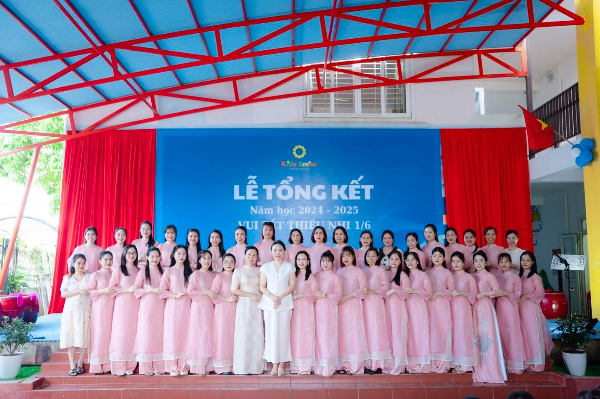
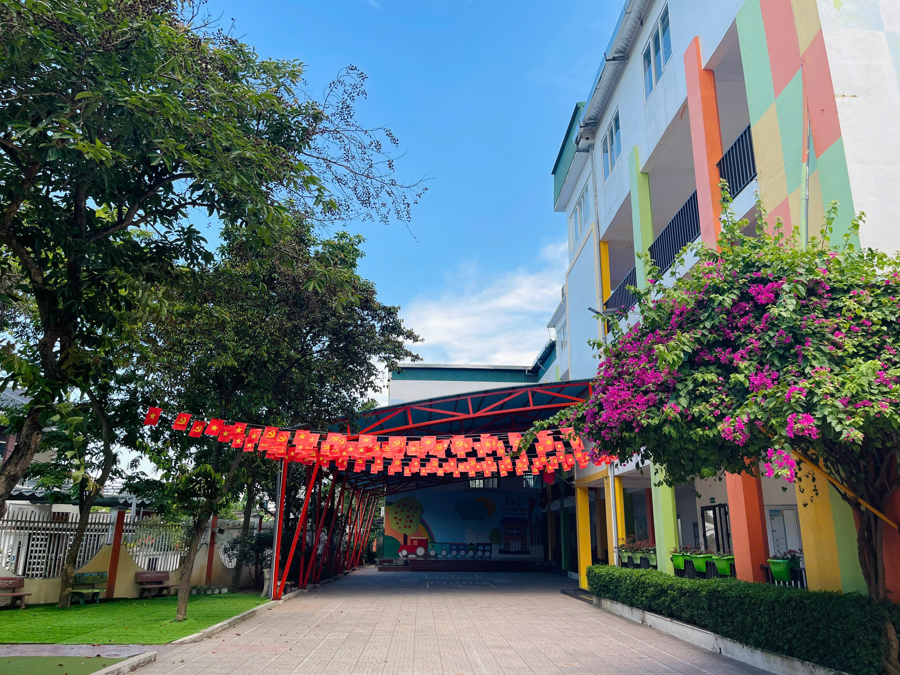
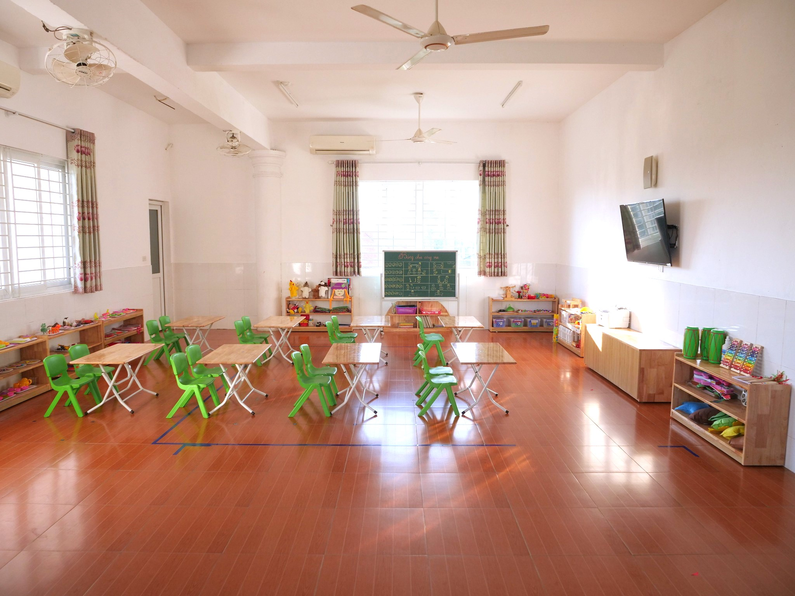
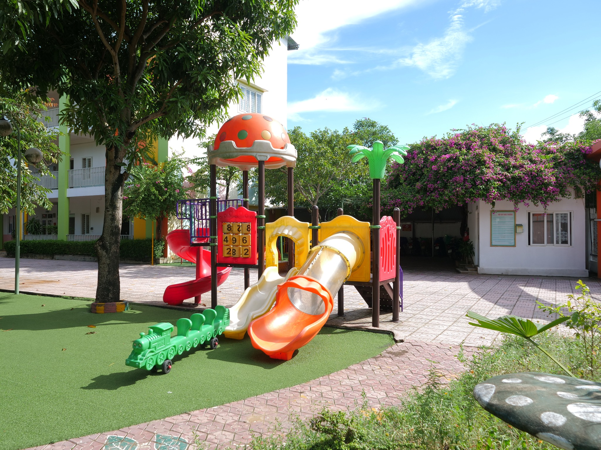
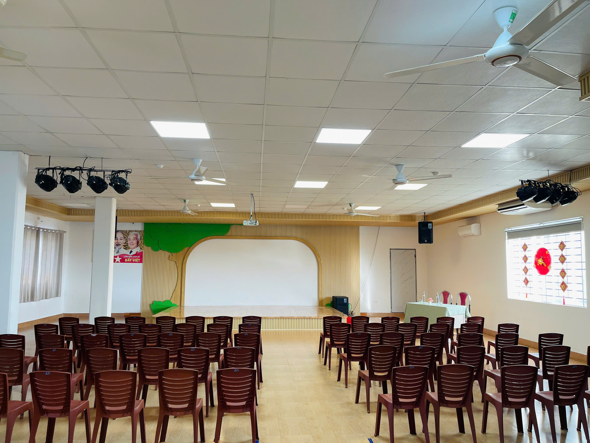
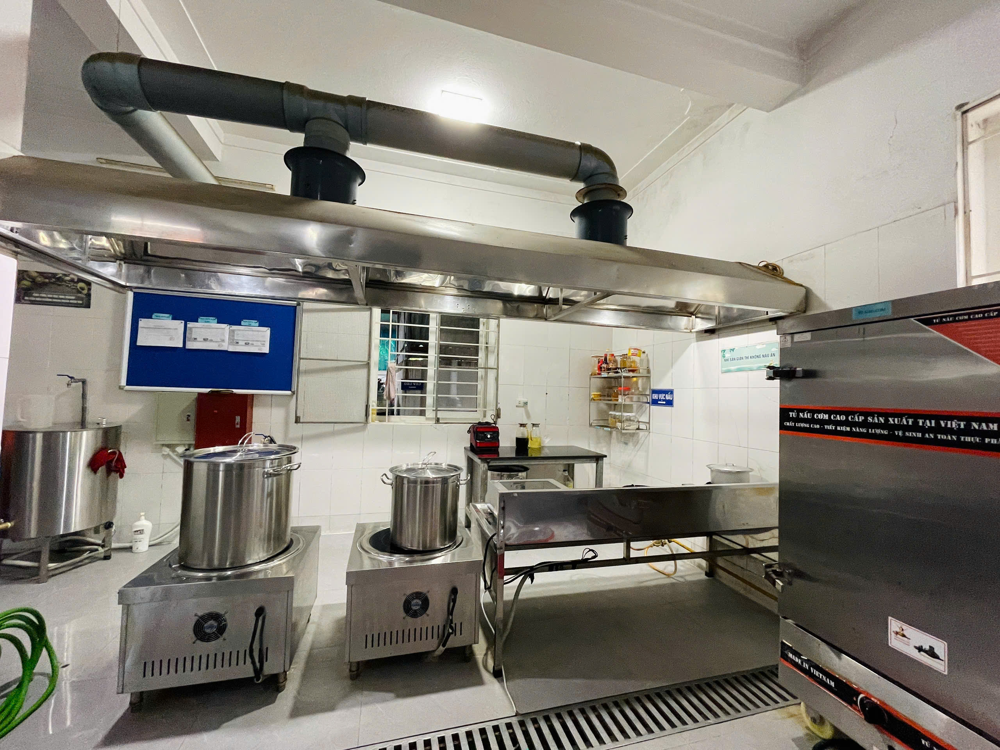
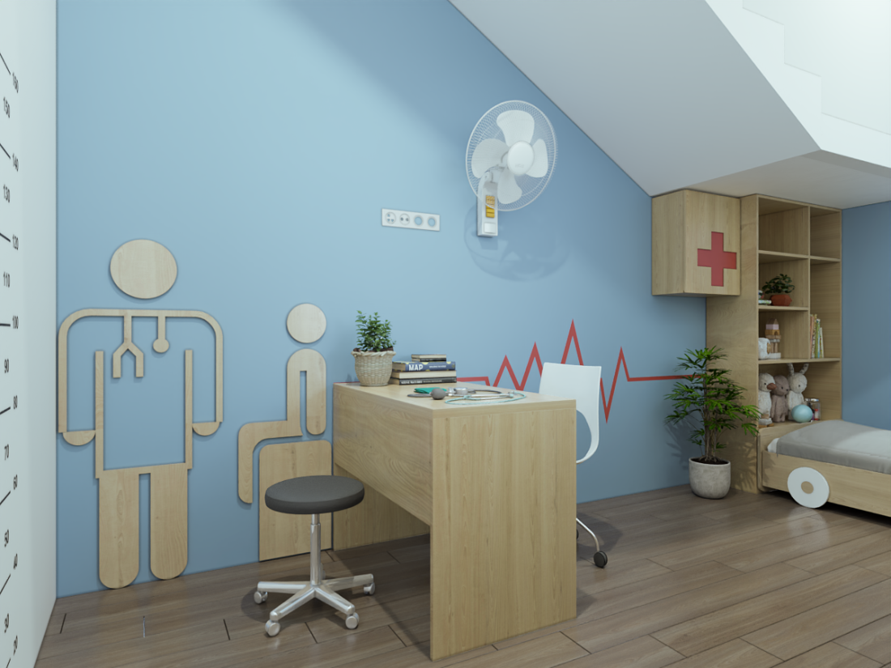
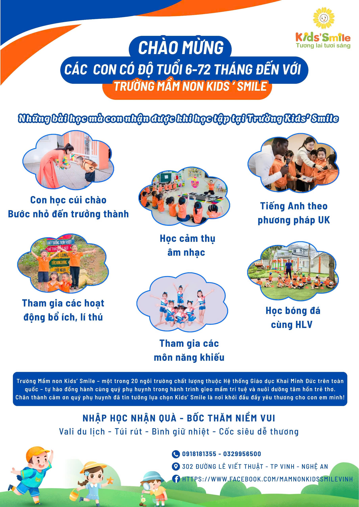

Lễ Tổng kết năm học 2024 – 2025
Một buổi lễ trang trọng và ấm áp nhìn lại chặng đường học tập, rèn luyện của các con, với những tiết mục văn nghệ sôi động và bữa tiệc liên hoan vui tươi.
KIDS’ SMILE là ngôi trường mầm non được xây dựng với lý tưởng “góp phần công sức nhỏ bé của mình cho sự nghiệp trồng người” để tạo ra những thế hệ “công dân mới” có đủ cả Đức lẫn Tài.
Đúng như đại văn hào Voltaire đã nói “tư tưởng lớn gặp nhau”, một nhân duyên vô cùng tuyệt vời đã đến, khi KIDS’ SMILE gặp được Hệ thống giáo dục KHAI MINH ĐỨC – Hệ thống luôn lấy giáo dục nhân cách làm nền tảng , với kinh nghiệm hơn 8 năm phát triển, mang lại nhiều thành quả tốt và được phụ huynh hưởng ứng, tin tưởng.
Vào tháng 1 năm 2022, Trường mầm non KIDS’ SMILE đã gia nhập và trở thành thành viên chính thức của Hệ Thống giáo dục KHAI MINH ĐỨC.
Trường Mầm non Kids’Smile tự hào là môi trường giáo dục hiện đại, an toàn và thân thiện, giúp trẻ phát triển toàn diện. Với hệ thống cơ sở vật chất khang trang, trường mang đến không gian học tập và vui chơi lý tưởng.
Trường có khuôn viên rộng rãi, thoáng mát nhiều cây xanh, không gian mở. Hệ thống an ninh và camera giám sát đảm bảo an toàn.
Các phòng học rộng rãi, đủ ánh sáng tự nhiên , trang bị bàn ghế phù hợp, điều hòa, bảng tương tác, TV...
Sân chơi ngoài trời rộng rãi với nhiều trò chơi vận động như cầu trượt, xích đu, nhà bóng và khu tập gym riêng.
Bao gồm phòng nghệ thuật với đàn, trống và thư viện nhỏ với nhiều sách tranh.
Hệ thống bếp ăn một chiều hiện đại, sử dụng bếp điện từ, đảm bảo vệ sinh an toàn thực phẩm.
Có phòng y tế riêng với đầy đủ trang thiết bị sơ cứu và nhân viên y tế túc trực.
Tại Trường Mầm non Kids’Smile, chúng tôi tự hào về đội ngũ giáo viên tận tâm, giàu chuyên môn và chan chứa yêu thương. Các cô không chỉ là người hướng dẫn kiến thức mà còn là người bạn, người mẹ thứ hai của trẻ.
100% giáo viên đạt chuẩn và trên chuẩn, thường xuyên được tập huấn nâng cao kỹ năng.
Các cô luôn lấy đạo đức và nhân cách làm nền tảng, luôn lắng nghe và thấu cảm trẻ.
Luôn đổi mới hoạt động, tổ chức trải nghiệm giúp trẻ phát triển toàn diện.
Đội ngũ giáo viên là một gia đình chuyên môn gắn kết, cùng nhau nuôi dưỡng tình yêu nghề.
Từ năm học 2024–2025, trường tiên phong thực hiện Chương trình Giáo dục Mầm non mới do Bộ Giáo dục & Đào tạo ban hành, hướng đến mục tiêu “lấy trẻ làm trung tâm – phát triển năng lực và phẩm chất”.
Dịp Tết là cơ hội để giáo dục trẻ về lòng hiếu thảo, nguồn gốc của đạo đức. Các con thực hành rửa chân, đấm lưng, bóp vai để tri ân Ông Bà, Bố Mẹ.
Sự tập trung là năng lực quan trọng cho việc học. Trường tổ chức Hoạt động ĐỌC SÁCH CHỈ CHỮ hàng ngày với cuốn “Phép Tắc Người Con” để rèn luyện sự tập trung và đạo đức cho trẻ.
Trẻ được học cách tự lập trong giờ ăn, tham gia vào việc sắp bàn ghế, chia cơm. Trước bữa ăn, các con đọc bài thơ “Cảm ơn” để biết quý trọng thức ăn và công sức người lao động.
Chào hỏi lễ phép là nền tảng của nhân cách tốt đẹp và giúp trẻ phát triển kỹ năng giao tiếp, tạo sự tự tin.
Dạy trẻ kỹ năng chăm sóc người thân giúp xây dựng tình yêu thương, trách nhiệm và các kỹ năng xã hội. Các bé học cách quan tâm, giúp đỡ ông bà, bố mẹ từ những việc nhỏ nhất.
Trường đồng hành cùng Trung tâm Ngoại ngữ 2G Education, dạy học theo phương pháp UK với triết lý "ROOTS BEFORE WINGS – GỐC RỄ TRƯỚC ĐÔI CÁNH". Tiếng Anh không chỉ là ngôn ngữ, mà là hành trang nhân cách.
Lớp học võ định kỳ với HLV chuyên nghiệp giúp trẻ rèn thể lực, ý chí, tính kỷ luật, và kỹ năng tự bảo vệ.
Môn năng khiếu vẽ giúp kích thích trí tưởng tượng, rèn sự tập trung, và là cách để trẻ diễn đạt cảm xúc, nuôi dưỡng tâm hồn yêu cái đẹp.
Múa là ngôn ngữ không lời giúp trẻ thể hiện cảm xúc, rèn sự dẻo dai, cảm nhận âm nhạc và tăng sự tự tin.
Giúp trẻ không chỉ lắng nghe mà còn cảm nhận, phản xạ và thể hiện cảm xúc qua nhịp điệu, kích thích trí não và nuôi dưỡng cảm xúc tích cực.
Các bé được huấn luyện bài bản cùng HLV chuyên nghiệp, giúp phát triển sức khỏe, sự nhanh nhẹn, tinh thần đồng đội và tính kỷ luật.
Một buổi lễ trang trọng và ấm áp nhìn lại chặng đường học tập, rèn luyện của các con, với những tiết mục văn nghệ sôi động và bữa tiệc liên hoan vui tươi.
Hoạt động giúp các con hiểu về ý nghĩa và sự khác biệt của mâm ngũ quả 3 miền, qua đó rèn luyện sự khéo léo và tinh thần làm việc nhóm.
Vòng loại được tổ chức để chuẩn bị cho Đại hội TDTT, giúp các con rèn luyện thể lực và kỹ năng giữ thăng bằng trong không khí sôi động.
Hoạt động trải nghiệm giúp các con hiểu ý nghĩa của thẻ căn cước, niềm tự hào dân tộc và học về văn hóa ứng xử nơi công cộng.
Một nét văn hóa đặc trưng của trường, nơi các con thể hiện lòng hiếu thảo qua hành động rửa chân tri ân Ông Bà, Bố Mẹ.
Chuyến đi dã ngoại giúp các bé hòa mình vào thiên nhiên, học hỏi về quá trình cây kết trái và bồi đắp tâm yêu thương, san sẻ.
Hoạt động thường niên của Hệ thống Giáo dục Khai Minh Đức nhằm tôn vinh nét đẹp văn hóa “uống nước nhớ nguồn” và lan tỏa tinh thần hiếu đạo. Chương trình tại Nghệ An năm 2022 và 2023 đã thu hút hàng ngàn người tham dự và để lại nhiều cảm xúc sâu sắc.
Các trại hè được tổ chức thường niên, giúp học sinh trải qua nhiều cung bậc cảm xúc, vun bồi lòng biết ơn với Tổ Quốc, Cha Mẹ, Thầy Cô và Xã hội. Năm 2023, trại hè phối hợp cùng LĐLĐ TP. Vinh, thu hút hơn 200 con em CNVCLĐ tham gia.
Chương trình giáo dục miễn phí dành cho học sinh và phụ huynh, được tổ chức vào tối thứ 6 hàng tuần tại trường. Lớp học nhằm vun bồi nhân cách tốt đẹp, đạo đức và kỹ năng sống quan trọng.
Hãy cùng chúng tôi đồng hành để mỗi trẻ được sống trong một môi trường yêu thương, khám phá và trưởng thành theo cách hạnh phúc nhất!
